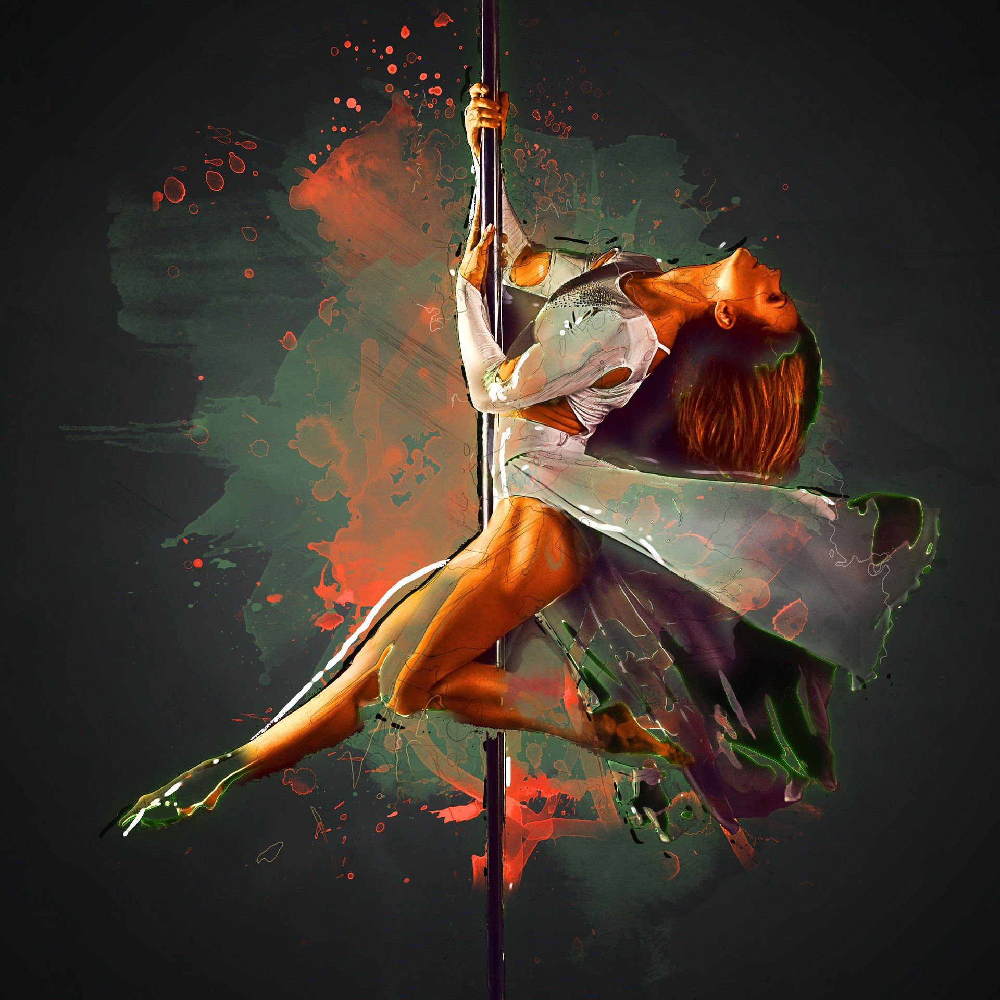

I started pole dancing just under two years ago, as a way to exercise but have a lot of fun. What started as a curiousity turned into a full-blown addiction.
I spend lots of money and time on this hobby, and I couldn't be happier about it! There is so much joy in the sense of community that I've discovered through this form of dance. Women of all ages, sizes, backgrounds, all coming together for the love of pole.
I encourage anyone to try this awesome hobby. You won't regret it!
